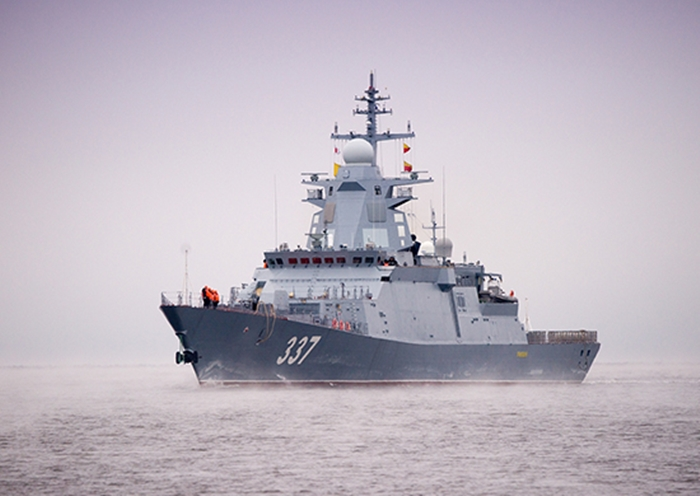

Гремящий
Многоцелевой корвет в составе Тихоокеанского флота РФ. Имеет навигационное,
радиолокационное, радиоэлектронное оснащение, обычную и зенитную артиллерийские установки,
ракетное и противолодочное вооружение. В авиационную группу входит противолодочный вертолет
Ка-27ПЛ.
Содержание
Конструкция
- Длина: 106,3 м. (наибольшая)
- Ширина: 13 м. (по ватерлинии)
- Осадка: 3,7 м. (по носовому бульбу)
- Водоизмещение стандартное: 1800 т.
- Водоизмещение полное: 2430 т.
- Скорость: 27 узлов (50 км/час).
- Автономность плавания — 15 суток.
- Экипаж крейсера — 100 человек (в т. ч.14 офицеров)
- Length: 106,3 m. (largest)
- Width: 13 m. (along the waterline)
- Draft: 3,7 m (on the nasal bulb)
- Standard displacement: 1800 tons.
- Full displacement: 2430 tons.
- Speed: 27 knots (50 km/h).
- The autonomy of navigation is 15 days
- The crew of the cruiser is 100 people (14 officers)
История
Заложен на стапеле судостроительного предприятия «Северная верфь» 1 февраля 2012 года
(заводской № 1005) по модернизированному проекту 20385, предусматривающему установку на
корабле вместо восьми дозвуковых противокорабельных ракет Х-35У «Уран», восемь крылатых
ракет большой дальности 3М-14 «Калибр», «Оникс»,«Циркон».
К 23 июня 2014 года поставлена надстройка из композитного материала. Поставка была осуществлена в строго оговорённые госконтрактом от 27.03.2006 № 253/05/2/К/0546-06 сроки.
По изначальному проекту в качестве главных двигателей предусматривалась установка немецких дизельных агрегатов компании «MTU», но в связи с отказом компании поставить их, на корабль будут установлены дизельные агрегаты ДДА 12 000 производства АО «Коломенский завод». К 17 февраля 2016 года началась подготовка к их монтажу на корвет. К 20 мая 2016 года агрегаты были установлены.
Спущен на воду 30 июня 2017 года.
Изначально планировалось, что после окончания строительства «Гремящий» войдёт в состав Северного флота, но после спуска на воду было объявлено, что корабль войдёт в состав Тихоокеанского флота. Стоимость корвета составит 14-18 млрд рублей.
В начале октября 2017 года экипаж корвета приступил к обучению в Объединённом учебном центре ВМФ России в Санкт-Петербурге.
На 25 октября 2017 года техническая готовность корвета достигла 65%.
В январе 2018 года на корабль было подано штатное электропитание, и начаты швартовные испытания.
В сентябре 2018 года начато заселение экипажа корабля.
На август 2018 года было запланировано начало ходовых испытаний. На октябрь 2018 года запланированы государственные испытания.
На 12 февраля 2019 года техническая готовность корвета достигла 90%. 21 апреля 2019 года вышел в море для проведения заводских ходовых испытаний на полигонах Балтийского флота.
31 октября 2019 года корвет посетили Верховный Главнокомандующий Владимир Путин и министр обороны Сергей Шойгу. 13 ноября корвет прибыл на Беломорскую ВМБ Северного флота для прохождения дальнейших испытаний в Белом море. 9 декабря проведены стрельбы крылатыми ракетами «Калибр» и «Оникс».
Сдача корабля флоту изначально была запланирована на 25 декабря 2019 года, но позже перенесена на следующий год. Планировалось, что корвет пройдёт Северным морским путём на Тихоокеанский флот для завершения государственных испытаний.
Готовился к передаче Тихоокеанскому флоту в августе 2020 года. Позднее сроки были перенесены на конец декабря 2020 года. Поднятие флага и принятие в состав ТОФ ВМФ России состоялось 29 декабря 2020 года.
К 23 июня 2014 года поставлена надстройка из композитного материала. Поставка была осуществлена в строго оговорённые госконтрактом от 27.03.2006 № 253/05/2/К/0546-06 сроки.
По изначальному проекту в качестве главных двигателей предусматривалась установка немецких дизельных агрегатов компании «MTU», но в связи с отказом компании поставить их, на корабль будут установлены дизельные агрегаты ДДА 12 000 производства АО «Коломенский завод». К 17 февраля 2016 года началась подготовка к их монтажу на корвет. К 20 мая 2016 года агрегаты были установлены.
Спущен на воду 30 июня 2017 года.
Изначально планировалось, что после окончания строительства «Гремящий» войдёт в состав Северного флота, но после спуска на воду было объявлено, что корабль войдёт в состав Тихоокеанского флота. Стоимость корвета составит 14-18 млрд рублей.
В начале октября 2017 года экипаж корвета приступил к обучению в Объединённом учебном центре ВМФ России в Санкт-Петербурге.
На 25 октября 2017 года техническая готовность корвета достигла 65%.
В январе 2018 года на корабль было подано штатное электропитание, и начаты швартовные испытания.
В сентябре 2018 года начато заселение экипажа корабля.
На август 2018 года было запланировано начало ходовых испытаний. На октябрь 2018 года запланированы государственные испытания.
На 12 февраля 2019 года техническая готовность корвета достигла 90%. 21 апреля 2019 года вышел в море для проведения заводских ходовых испытаний на полигонах Балтийского флота.
31 октября 2019 года корвет посетили Верховный Главнокомандующий Владимир Путин и министр обороны Сергей Шойгу. 13 ноября корвет прибыл на Беломорскую ВМБ Северного флота для прохождения дальнейших испытаний в Белом море. 9 декабря проведены стрельбы крылатыми ракетами «Калибр» и «Оникс».
Сдача корабля флоту изначально была запланирована на 25 декабря 2019 года, но позже перенесена на следующий год. Планировалось, что корвет пройдёт Северным морским путём на Тихоокеанский флот для завершения государственных испытаний.
Готовился к передаче Тихоокеанскому флоту в августе 2020 года. Позднее сроки были перенесены на конец декабря 2020 года. Поднятие флага и принятие в состав ТОФ ВМФ России состоялось 29 декабря 2020 года.
It was laid on the slipway of the shipbuilding enterprise "Severnaya Verf" on February
1, 2012 (factory No. 1005) according to the modernized project 20385, which provides for
the installation on the ship instead of eight subsonic anti-ship missiles X-35U
"Uranus", eight long-range cruise missiles 3M-14 "Caliber", "Onyx", "Zircon".
By June 23, 2014, a composite superstructure was delivered. The delivery was carried out within the terms strictly stipulated by the state contract dated 27.03.2006 No. 253/05/2/K/0546-06.
According to the initial project, the installation of German diesel units of the company "MTU" was envisaged as the main engines, but due to the company's refusal to supply them, diesel units DDA 12 000 produced by JSC "Kolomenskoye Zavod" will be installed on the ship. By February 17, 2016, preparations for their installation on the corvette began. By May 20, 2016, the units were installed.
Launched on June 30, 2017.
Initially, it was planned that after the completion of construction, the "Thundering" would become part of the Northern Fleet, but after launching, it was announced that the ship would become part of the Pacific Fleet. The cost of the corvette will be 14-18 billion rubles.
In early October 2017, the crew of the corvette began training at the Joint Training Center of the Russian Navy in St. Petersburg.
As of October 25, 2017, the technical readiness of the corvette reached 65%.
In January 2018, the ship was supplied with regular power supply, and mooring tests began.
In September 2018, the settlement of the ship's crew began.
Sea trials were scheduled to begin in August 2018. State tests are scheduled for October 2018.
On February 12, 2019, the technical readiness of the corvette reached 90%. On April 21, 2019, he went to sea to conduct factory sea trials at the ranges of the Baltic Fleet.
On October 31, 2019, the corvette was visited by Supreme Commander Vladimir Putin and Defense Minister Sergei Shoigu. On November 13, the corvette arrived at the Belomorskaya Naval Base of the Northern Fleet to undergo further tests in the White Sea. On December 9, Kalibr and Onyx cruise missiles were fired.
The delivery of the ship to the fleet was originally scheduled for December 25, 2019, but later postponed to next year. It was planned that the corvette would pass the Northern Sea Route to the Pacific Fleet to complete state tests.
It was preparing for transfer to the Pacific Fleet in August 2020. The deadline was later postponed to the end of December 2020. The flag raising and acceptance into the Russian Navy's TOPF took place on December 29, 2020.
By June 23, 2014, a composite superstructure was delivered. The delivery was carried out within the terms strictly stipulated by the state contract dated 27.03.2006 No. 253/05/2/K/0546-06.
According to the initial project, the installation of German diesel units of the company "MTU" was envisaged as the main engines, but due to the company's refusal to supply them, diesel units DDA 12 000 produced by JSC "Kolomenskoye Zavod" will be installed on the ship. By February 17, 2016, preparations for their installation on the corvette began. By May 20, 2016, the units were installed.
Launched on June 30, 2017.
Initially, it was planned that after the completion of construction, the "Thundering" would become part of the Northern Fleet, but after launching, it was announced that the ship would become part of the Pacific Fleet. The cost of the corvette will be 14-18 billion rubles.
In early October 2017, the crew of the corvette began training at the Joint Training Center of the Russian Navy in St. Petersburg.
As of October 25, 2017, the technical readiness of the corvette reached 65%.
In January 2018, the ship was supplied with regular power supply, and mooring tests began.
In September 2018, the settlement of the ship's crew began.
Sea trials were scheduled to begin in August 2018. State tests are scheduled for October 2018.
On February 12, 2019, the technical readiness of the corvette reached 90%. On April 21, 2019, he went to sea to conduct factory sea trials at the ranges of the Baltic Fleet.
On October 31, 2019, the corvette was visited by Supreme Commander Vladimir Putin and Defense Minister Sergei Shoigu. On November 13, the corvette arrived at the Belomorskaya Naval Base of the Northern Fleet to undergo further tests in the White Sea. On December 9, Kalibr and Onyx cruise missiles were fired.
The delivery of the ship to the fleet was originally scheduled for December 25, 2019, but later postponed to next year. It was planned that the corvette would pass the Northern Sea Route to the Pacific Fleet to complete state tests.
It was preparing for transfer to the Pacific Fleet in August 2020. The deadline was later postponed to the end of December 2020. The flag raising and acceptance into the Russian Navy's TOPF took place on December 29, 2020.